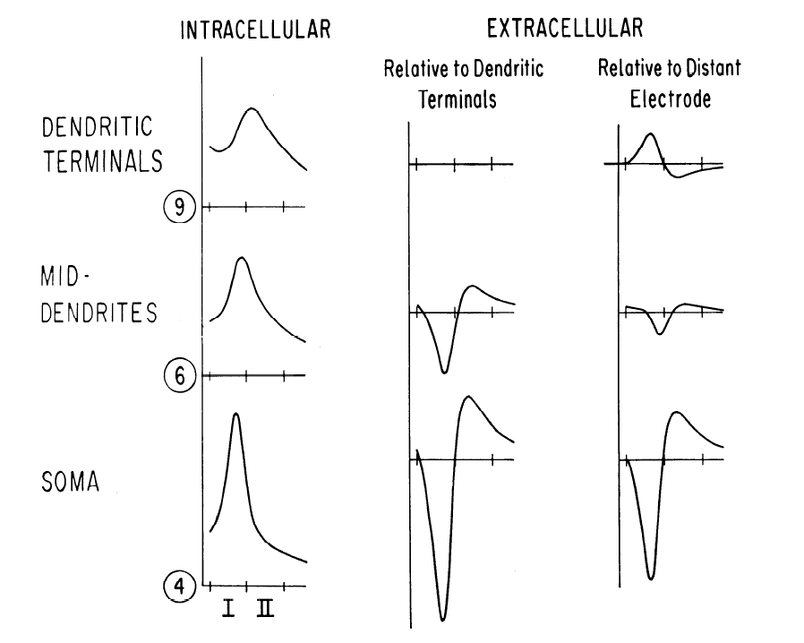
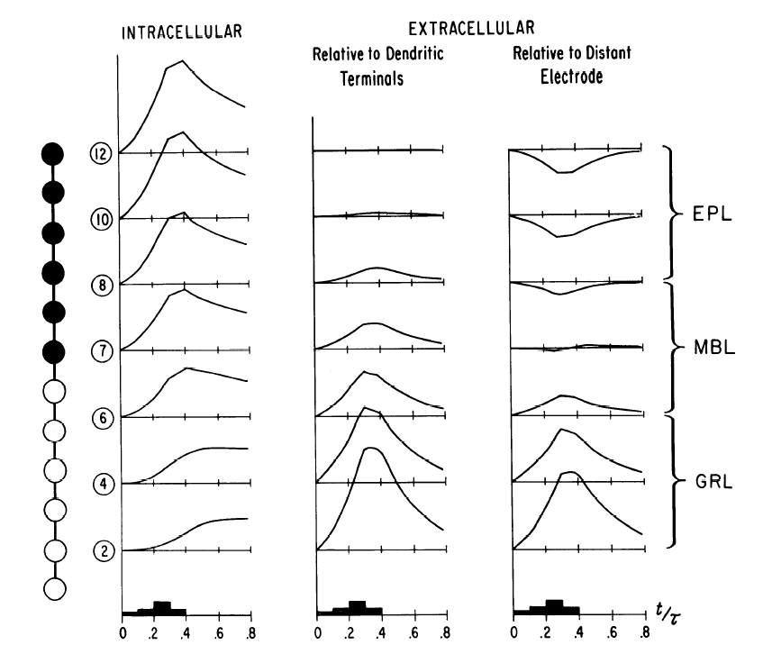

This is the readme for a model in construction for the paper: Rall W, Shepherd GM (1968) Theoretical reconstruction of field potentials and dendrodendritic synaptic interactions in olfactory bulb. J Neurophysiol 31:884-915 Examples of results shown below:  FIG. 7. Computed voltage transients for axon-soma-dendritic compartmental model of mitral cell during antidromic invasion. Left-hand column: intracellular transients in soma, 4; dendritic shafts, 6; and dendritic terminals, 9. Soma is active, dendrites are passive; dendritic electrotonic length equals lambda/2. Extracellular transients at these compartments are shown in the middle column computed relative to the dendritic terminals, and in right-hand column computed relative to distant reference electrode. Time scales divided into periods I and II. Amplitude of intracellular soma peak about 86% of axonal spike amplitude potential; amplitude of negative extracellular soma peak, relative to distant electrode, about 1.5 mv.  FIG. 12. Computational results for granule cell model. Chain of 12 equal compartments corresponds to an electrotonic length of 1.7 lambda. Filled circles indicate loci of membrane depolarization, stepwise time course of synaptic excitatory conductance, E, shown below. Time in t/tau; each of the four depolarizing (E) steps had a time duration of 0.1 tau. Computed potential transients, intracellular and extracellular, as shown, refer to compartment number at left, and corresponding olfactory bulb layer at right.